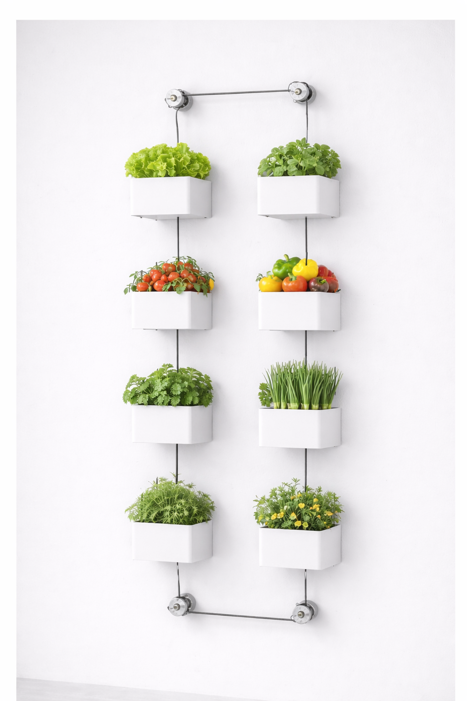

MurMûr n'est pas né dans un bureau de design. Il est né d'une frustration partagée : pourquoi est-il si difficile de cultiver chez soi quand on n'a pas de jardin ?
Tout a commencé par un problème simple : comment faire pousser des tomates cerises sur un balcon de 4m² sans se contorsionner à chaque arrosage ? Les potagers muraux du marché n'étaient que des rangées de pots fixés à une grille — jolis, mais inutilisables vraiment.
Trois ans de prototypes, de tests, et d'itérations plus tard, MurMûr est né. Un système rotatif qui amène chaque plante à portée de main, depuis un point fixe. Simple dans l'usage, rigoureux dans l'ingénierie.
Ce qui nous différencie de nos concurrents, ce n'est pas l'esthétique — c'est la conviction que la technologie doit disparaître derrière l'expérience. Tourner un bac doit sembler aussi naturel qu'ouvrir un robinet.

3 ingénieurs, un objectif — rendre la culture urbaine accessible à tous.
C'est lui qui s'assure que les plantes poussent vraiment. Il a choisi les substrats, testé les cultures et défini ce qui fonctionne dans un bac MurMûr — pas juste sur le papier, mais sur un vrai balcon.
Sa question de départ : comment faire pousser des légumes toute l'année sous un ciel belge ? Il a travaillé sur l'exposition, l'arrosage et l'adaptation des cultures aux quatre saisons.
Il a conçu le mécanisme de rotation — le cœur du produit. Son objectif était simple : quelque chose que n'importe qui peut installer en une heure, et qui tient 15 ans dehors.
Tous nos concurrents proposent des murs végétaux statiques. Beau à regarder, difficile à entretenir. MurMûr est le seul système où chaque bac tourne vers vous — pas l'inverse. Un détail qui change tout au quotidien.
Un bac de 20 litres de substrat par emplacement, pas 2 litres dans un pot décoratif. Nos bacs sont dimensionnés par des bio-ingénieurs pour accueillir tomates, poivrons et fraises — pas juste du basilic en pot de yaourt.
Conçu par un ingénieur civil avec une contrainte simple : résister à 15 ans d'intempéries belges. Matériaux traités contre le gel, les UV et la corrosion. MurMûr n'est pas un gadget de saison.
Contrairement aux systèmes standards qui imposent leur format, MurMûr se configure sur mesure — en largeur et en hauteur — pour s'intégrer à n'importe quelle surface rectangulaire.
Rejoignez les premiers à recevoir MurMûr. Réservez votre place dans la liste d'attente dès maintenant.
Réserver ma place →